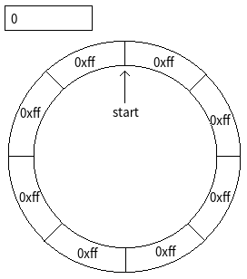
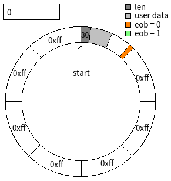
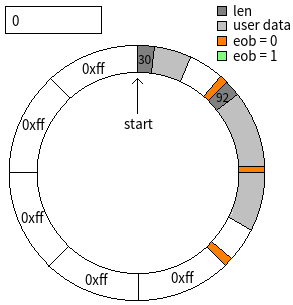
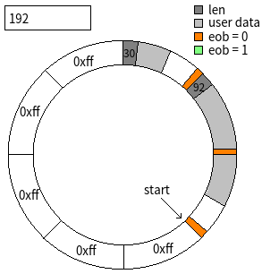
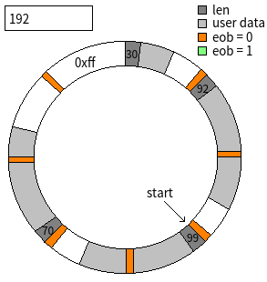
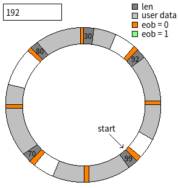
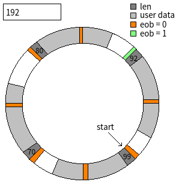
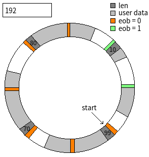
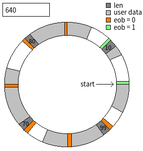

============================阶段一：概述=============================
很多服务器软件都需要使用到日志文件。有些日志文件是给人阅读的（比如分析错误日志），有些是用于数据恢复的（比如MySQL的UNDO log，redis的AOF）。大多数日志文件都有以下特点：
- 单次写入数据量较小
- 写入操作较频繁
- 需要显式调用fsync()确保落盘
这往往成了软件性能的瓶颈。一方面，write()是系统调用，需要有很大的性能开销，另一方面，fsync()使得文件缓冲区失效，严重暴露了磁盘的高延迟问题——磁盘是块设备，只能以块为单位进行读写，即使写入1字节然后fsync()，也会重写整个块。
传统的基于磁盘的日志文件，除了性能上的弊端外，还有功能上的缺陷。磁盘无法保证write()操作是原子性的。比如在执行
write(fd, 'hello,world!', 12);
fsync(fd);
的中途，如果系统崩溃，那么可能文件末尾写入了“hell"，造成了数据的不完整。对于给人类阅读的日志文件，数据不完整还不是什么问题，但是用于数据恢复的日志文件是不容许这样的不完整性的。在过去，没有一个通用的解决办法，各个软件根据自身的业务特性提出了不同的方案。比如在Redis的AOF中，当需要记录
set name ayaharu
这样一条命令时，会使用这样的格式：
*3 $3 set $4 name $7 ayaharu
其中*3表示后面有三个项。每一个项开头是$<length>，表示项的长度，之后是项的内容。所有单元使用\r\n隔开。这样，当写入过程中系统崩溃时，可能记录了这样的不完整数据：
*3 $3 set $4 nam
根据格式规范即可判定该命令记录不完整，而且可以知道命令开头在哪里，从而修复日志文件（移除最后一条不完整的记录）。
但是，这无疑增加了数据量，造成了性能进一步下降。其他不同的软件的方法，也各有牺牲。
事实上，磁盘的带宽是通常是足够的（固态硬盘可以达到GB/s级别的写入速度，即使是机械磁盘也可以达到MB/s的写入速度），瓶颈在于单次访问延迟（一次fsync()可能需要几十毫秒）。在传统的文件系统中，通过在内存上开辟一块缓冲区，将写入文件的内容先积累在缓冲区中，当足够多时再一次性写入磁盘，从而大大提高了写入性能。但是这也导致了系统崩溃时数据可能丢失。
而NVM（非易失性内存）的出现带来了福音。由于结构上的特性，NVM可以按字节寻址，因此不会出现块设备那样的问题。此外，NVM挂在内部总线上，可以通过CPU的load/store指令进行访问，从软件的角度看与内存无异，所有读写操作都在用户态完成，无需系统调用。那么，先将写入文件的数据积累在NVM上的一块缓冲区中，当数据足够多时再一次性写入磁盘，也应该能够提高性能。而由于NVM的非易失性，NVM缓冲区中的数据在系统崩溃时不会丢失。因此，通过设计适当的算法，应该能够将NVM作为磁盘的缓冲，提高写入性能，并确保写入操作的原子性。
这篇博客就是详细描述一种建立在NVM上的环形缓冲区，命名为nvmbuffer。nvmbuffer具有高速、非易失性和原子性的特点，而且可以快速重用（清空其中的数据）。nvmbuffer的应用场景如下：
- 频繁得将短小数据写入nvmbuffer中
- 当nvmbuffer中数据足够多时，将数据dump到文件中
- 重用（清空）nvmbuffer
- 回到第一步
============================阶段二：基本假设============================
首先我们要对NVM的特性作出如下两个假设：
- 当把cacheline中的数据刷出到NVM时，NVM中的写入是顺序的
- NVM对于总线带宽的写入是原子性的
第一条的含义是这样的：当把cacheline刷出CPU的cache时，第i字节不比第i+1字节被持久化的时间晚。假设cacheline是64字节的，那么第0字节一定比第1字节更早的写入NVM，第10字节一定比第60字节更早得写入NVM。当然，这里说的“更早”，更确切地表达是“不晚于”。如果这条假设成立，那么即可得到结论：若cacheline中最后一字节被写入NVM，那么之前的字节也一定已经持久化。
第二条的含义是这样的：假设机器总线宽度是64位，也就是8字节，那么将一个对齐的8字节刷入NVM时，要么这8字节都写入，要么这8字节都没写入。
============================阶段三：设计==============================
其实我前后设计了非常多的方案，但是目前这个是我最满意的。之前那些就不提了～为了方便描述，我这里假设机器总线是64位的，一条cacheline是64字节（这也是目前主流的Intel CPU的参数）。首先，这是一个环形缓冲区，可以在脑海中想象一个环。环由若干个block构成，每一个block就是一个对齐的64字节。此外，还有一个对齐的64字节处在环外，用于记录环形缓冲区的起始位置。该64字节中其实只用了开头的8字节，作为一个size_t变量，命名为start。刚开始时，start设置为0，环中的所有字节全部置为0xff，如下图所示：

当用户想要写入30字节的数据时，那么在第一个block中，先把30作为uint32_t写入，占用4字节，然后写入30字节的数据，最后在block的末尾字节写入0。此时如图：

开头4字节命名为len，之后len个字节就是数据，block末尾字节命名为eob（end of block）。
当用户想接着写入92字节的数据时，那么在第二个block中，先把92作为uint32_t写入，占用4字节，然后写入59字节的数据，再在第二个block的eob中写入0。然后，在第三个block中，写入33字节的数据，并在第三个block中的eob中写入0。如图所示：

可以看到，每次写入用户数据时，第一个block可以容纳64-sizeof(uint32_t)-1 = 59字节的用户数据，后续的每一个block可以容纳64-1 = 63字节的用户数据。每一个block末尾的eob都填入0。每次填满一个block，就把该block刷出cacheline（通过clwb指令），并开始填充下一个block。
读取数据时，首先从start指向的位置开始：
- 读取一个uint32_t，作为len
- 根据len计算最后一个block的eob所在位置，并读取之
- 如果eob不是0，则说明没有更多数据，否则是一段正确写入的数据
这样的读写规则就保证了原子性，为什么呢？
因为eob处于block末尾，而block又是顺序刷出，根据假设一，最后一个eob一定不会早于其他字节被持久化。因此，如果最后一个eob写入成功，即可断定所有block写入成功。如果最后一个eob没有写入成功，那么就认定写入过程中崩溃，丢弃之。
假设此时用户想要重用（清空）缓冲区，那么只需要将start设置为最后一次写入的位置加一即可。重用后如图所示：

假设接着用户又依次写入了99字节、70字节，那么如图所示：

接下来就是重点了！假设此时用户想继续写入80字节。那么先把80当作uint32_t写入，填充59字节的数据，末尾写入eob=0，此时的中间状态如下：

接下来的80-59 = 21字节数据需要写入下一个block。显然，环形缓冲区“套圈”了。此后，写入的eob将是1，而不再是0。这是因为，逻辑上的下一个block，也就是物理上的第一个block的eob已经写入了0。如果之后写入的eob还是0的话，就无法通过eob来判定写入的成功或失败。因此必须换一个eob！写入之后的状态如下：

“每次套圈，eob翻转”就是eob的更新规则，这样就能保证每次eob的原值与欲写入的新值是不同的！
假设用户又写入了10字节，那么状态如下：

此时，如果用户想要重用（清空）缓冲区，则把start置为640即可。状态如下：

为何是640而不是128呢？换句话说，为何是逻辑位置而不是物理位置呢？这是因为，根据逻辑位置，不仅可以计算出物理位置，还能计算出此时的eob应该是0还是1，也就是说逻辑地址包好了更多的信息。当然，使用逻辑地址有一个问题就是，当start不停累加，可能会溢出。这个问题很容易解决。只需要每次把start的值除以环的大小的两倍，得到的余数赋值给start即可。至于为啥？自己想哈哈哈～
================================阶段四：实现===============================
代码总共分4个文件：common.h、nvmflush.h、nvmbuffer.h和nvmbuffer.c。
common.h
#ifndef COMMON_H
#define COMMON_H
#include <stdio.h>
#ifdef NO_ASSERT
#define assert(x)
#endif
#define ERROR(ret, show_errstr, msgs...) \
({ \
fprintf(stderr, "[<%s> @ %s: %d]: ", __FUNCTION__, __FILE__, __LINE__); \
fprintf(stderr, ##msgs); \
if(show_errstr) \
perror(0); \
else \
printf("\n"); \
return (ret); \
})
#ifndef assert
#include <assert.h>
#endif
#endif
nvmflush.h
#ifndef NVMFLUSH_H
#define NVMFLUSH_H
#include <common.h>
typedef int (*nvmflush_t)(void* addr, size_t size);
#define NVMFLUSH_FLUSH(flush_func, addr, size, fail_ret) \
({ \
if((flush_func) && !(flush_func)((addr), (size))) \
ERROR((fail_ret), 0, "flush_func(%p, %lu) failed!", (addr), (size)); \
})
#define NVMFLUSH_SET(flush_func, key, val, fail_ret) \
({ \
(key) = (val); \
NVMFLUSH_FLUSH((flush_func), &(key), sizeof(key), (fail_ret)); \
})
#endif
nvmbuffer.h
#ifndef NVMBUFFER_H
#define NVMBUFFER_H
#include <stdint.h>
#include <stdlib.h>
#include <nvmflush.h>
// 一个NVM缓冲区
struct nvmbuffer
{
// 对齐大小
size_t align;
// NVM硬件刷入函数
nvmflush_t flush;
// 指针->环形缓冲区逻辑开头位置，存放于NVM上
size_t* start;
// 指针->环形缓冲区其实地址，指向NVM
char* buffer;
// 环形缓冲区长度(align的整数倍)
size_t total_len;
// 当前写入位置(align的整数倍)
size_t seek;
// 当前写入块的eob值（end of block)，0或1
char eob;
// 空闲缓冲区长度(align的整数倍)
size_t free_len;
// 实际写入用户数据长度
size_t data_len;
};
/*
初始化NVM缓冲区，
nvmbuffer: nvmbuffer结构体指针
nvm_buf: NVM空间
nvm_capacity: NVM空间大小
nvm_align: NVM对齐大小
nvm_flush: NVM硬件刷入函数
reset: 是否重置NVM缓冲区
成功返回1，失败返回0。该函数不保证原子性。
*/
int nvmbuffer_init(struct nvmbuffer* nvmbuffer, void* nvm_buf, size_t nvm_capacity, size_t nvm_align,
nvmflush_t nvm_flush, int reset);
/*
获取NVM缓冲区单次写入的最大数据长度
nvmbuffer: nvmbuffer结构体指针
返回NVM缓冲区单次写入的最大数据长度
*/
size_t nvmbuffer_max_data_len(const struct nvmbuffer* nvmbuffer);
/*
获取NVM缓冲区当前可写入的最大数据长度
nvmbuffer: nvmbuffer结构体指针
返回NVM缓冲区当前可写入的最大数据长度
*/
size_t nvmbuffer_writable_len(const struct nvmbuffer* nvmbuffer);
/*
获取NVM缓冲区当前已写入的数据长度
nvmbuffer: nvmbuffer结构体指针
返回NVM缓冲区当前已写入的数据长度
*/
size_t nvmbuffer_written_len(const struct nvmbuffer* nvmbuffer);
/*
向NVM缓冲区写入数据
nvmbuffer: nvmbuffer结构体指针
data: 用户数据区域
len: 用户数据长度
成功返回1，失败返回0。该函数保证原子性。
*/
int nvmbuffer_write(struct nvmbuffer* nvmbuffer, const char* data, size_t len);
/*
将NVM缓冲区中当前已写入的用户数据输出到文件
nvmbuffer: nvmbuffer结构体指针
fd: 文件描述符
成功返回1，失败返回0。
*/
int nvmbuffer_dump(const struct nvmbuffer* nvmbuffer, int fd);
/*
清空NVM缓冲区以重用
nvmbuffer: nvmbuffer结构体指针
成功返回1，失败返回0。该函数保证原子性。
*/
int nvmbuffer_reuse(struct nvmbuffer* nvmbuffer);
#endif
nvmbuffer.c
#include <string.h>
#include <unistd.h>
#include <nvmbuffer.h>
// 当把缓冲区中的数据dump到文件时，避免每一个block调用依次write()，而是想把数据拷贝到内存缓冲区中，再调用write()
#define DUMP_BUFFER_SIZE 65536
#define MIN(a, b) ((a) < (b) ? (a) : (b))
// n/p向上取整
#define DIV_CEIL(n, p) (((n) - 1) / (p) + 1)
// 在position位置的数据块长度
#define DATA_LEN_AT(nvmbuffer, position) \
({ \
uint32_t* _plen = (uint32_t*)((nvmbuffer)->buffer + (position)); \
(*_plen); \
})
// 根据数据块长度计算出需要占用的大小
#define DATA_LEN_TO_CHUNK_LEN(nvmbuffer, data_len) \
({ \
size_t _count; \
size_t _first = (nvmbuffer)->align - sizeof(uint32_t) - 1; \
size_t _other = (nvmbuffer)->align - 1; \
if((data_len) <= _first) \
_count = 1; \
else \
_count = 1 + DIV_CEIL((data_len) - _first, _other); \
_count * (nvmbuffer)->align; \
})
// 获取指定位置开始的数据块占用长度
#define CHUNK_LEN_AT(nvmbuffer, position, max_len, eob) \
({ \
assert(nvmbuffer); \
assert((position) < (nvmbuffer)->total_len); \
assert((position) % (nvmbuffer)->align == 0); \
assert((max_len) <= (nvmbuffer)->total_len); \
assert((eob) == 0 || (eob) == 1); \
size_t _chunk_len; \
uint32_t _len = DATA_LEN_AT((nvmbuffer), (position)); \
do \
{ \
if(_len >= (max_len)) \
{ \
_chunk_len = 0; \
break; \
} \
_chunk_len = DATA_LEN_TO_CHUNK_LEN((nvmbuffer), _len); \
if(_chunk_len > (max_len)) \
{ \
_chunk_len = 0; \
break; \
} \
size_t _eob_pos = (position) + _chunk_len - 1; \
char _eob = (eob); \
if(_eob_pos >= (nvmbuffer)->total_len) \
{ \
_eob_pos -= (nvmbuffer)->total_len; \
_eob = 1 - _eob; \
} \
assert(_eob_pos < (nvmbuffer)->total_len); \
char* _peob = (nvmbuffer)->buffer + _eob_pos; \
if((*_peob) != _eob) \
{ \
_chunk_len = 0; \
break; \
} \
} \
while(0); \
_chunk_len; \
})
// start值转换为seek
#define START_TO_SEEK(nvmbuffer, start) \
({ \
assert(nvmbuffer); \
assert((start) % (nvmbuffer)->align == 0); \
((start) % (nvmbuffer)->total_len); \
})
// start值转换成eob
#define START_TO_EOB(nvmbuffer, start) \
({ \
assert(nvmbuffer); \
assert((start) % (nvmbuffer)->align == 0); \
((char)(((start) / (nvmbuffer)->total_len) % 2)); \
})
// 数据块占用长度转换成数据容量
#define CHUNK_LEN_TO_DATA_CAPACITY(nvmbuffer, chunk_len) \
({ \
assert((chunk_len) % (nvmbuffer)->align == 0); \
size_t _count = (chunk_len) / (nvmbuffer)->align; \
size_t _first = (nvmbuffer)->align - sizeof(uint32_t) - 1; \
size_t _other = (nvmbuffer)->align - 1; \
_count == 0 ? 0 : _first + (_count - 1) * _other; \
})
int nvmbuffer_init(struct nvmbuffer* nvmbuffer, void* nvm_buf, size_t nvm_capacity, size_t nvm_align,
nvmflush_t nvm_flush, int reset)
{
assert(nvmbuffer);
assert(nvm_buf);
if(nvm_align <= sizeof(uint32_t) + 1 || nvm_align < sizeof(size_t))
ERROR(0, 0, "param <nvm_align = %lu> is too small!", nvm_align);
if(nvm_align > DUMP_BUFFER_SIZE)
ERROR(0, 0, "param <nvm_align = %lu> is too big!", nvm_align);
if((size_t)nvm_buf % nvm_align)
ERROR(0, 0, "param <nvm_buf = %p> is not aligned by <nvm_align = %lu>!", nvm_buf, nvm_align);
size_t block_count;
if((block_count = nvm_capacity / nvm_align) < 2)
ERROR(0, 0, "param <nvm_capacity = %lu> is too small!", nvm_capacity);
nvmbuffer->align = nvm_align;
nvmbuffer->flush = nvm_flush;
nvmbuffer->start = (size_t*)nvm_buf;
nvmbuffer->buffer = (char*)nvm_buf + nvm_align;
nvmbuffer->total_len = (block_count - 1) * nvm_align;
if(reset)
{
NVMFLUSH_SET(nvm_flush, (*(nvmbuffer->start)), 0, 0);
memset(nvmbuffer->buffer, 0xff, nvmbuffer->total_len);
NVMFLUSH_FLUSH(nvm_flush, nvmbuffer->buffer, nvmbuffer->total_len, 0);
}
size_t start = (*(nvmbuffer->start));
nvmbuffer->seek = START_TO_SEEK(nvmbuffer, start);
nvmbuffer->eob = START_TO_EOB(nvmbuffer, start);
nvmbuffer->free_len = nvmbuffer->total_len;
nvmbuffer->data_len = 0;
size_t chunk_len;
while((chunk_len = CHUNK_LEN_AT(nvmbuffer, nvmbuffer->seek, nvmbuffer->free_len, nvmbuffer->eob)))
{
uint32_t len = DATA_LEN_AT(nvmbuffer, nvmbuffer->seek);
nvmbuffer->data_len += len;
nvmbuffer->seek += chunk_len;
assert(nvmbuffer->free_len >= chunk_len);
nvmbuffer->free_len -= chunk_len;
if(nvmbuffer->seek >= nvmbuffer->total_len)
{
nvmbuffer->seek -= nvmbuffer->total_len;
assert(nvmbuffer->seek < nvmbuffer->total_len);
nvmbuffer->eob = 1 - nvmbuffer->eob;
}
}
return 1;
}
size_t nvmbuffer_max_data_len(const struct nvmbuffer* nvmbuffer)
{
assert(nvmbuffer);
return CHUNK_LEN_TO_DATA_CAPACITY(nvmbuffer, nvmbuffer->total_len);
}
size_t nvmbuffer_writable_len(const struct nvmbuffer* nvmbuffer)
{
assert(nvmbuffer);
return CHUNK_LEN_TO_DATA_CAPACITY(nvmbuffer, nvmbuffer->free_len);
}
size_t nvmbuffer_written_len(const struct nvmbuffer* nvmbuffer)
{
assert(nvmbuffer);
return nvmbuffer->data_len;
}
int nvmbuffer_write(struct nvmbuffer* nvmbuffer, const char* data, size_t len)
{
assert(nvmbuffer);
assert(data);
size_t writable_len = nvmbuffer_writable_len(nvmbuffer);
if(len > writable_len)
{
size_t max_data_len = nvmbuffer_max_data_len(nvmbuffer);
assert(max_data_len >= writable_len);
if(len > max_data_len)
ERROR(0, 0, "param <len = %lu> is too big, max data length is %lu!", len, max_data_len);
ERROR(0, 0, "param <len = %lu> is too big, only %lu writable!", len, writable_len);
}
nvmbuffer->data_len += len;
int first_block = 1;
while(len)
{
assert(nvmbuffer->seek % nvmbuffer->align == 0);
char* base = nvmbuffer->buffer + nvmbuffer->seek;
char* copy_ptr = base;
size_t copy_capacity = nvmbuffer->align - 1;
char* peob = base + copy_capacity;
if(first_block)
{
uint32_t* plen = (uint32_t*)base;
(*plen) = len;
copy_ptr += sizeof(uint32_t);
copy_capacity -= sizeof(uint32_t);
first_block = 0;
}
size_t copy_len = MIN(len, copy_capacity);
memcpy(copy_ptr, data, copy_len);
assert((*peob) != nvmbuffer->eob);
(*peob) = nvmbuffer->eob;
NVMFLUSH_FLUSH(nvmbuffer->flush, base, nvmbuffer->align, 0);
data += copy_len;
len -= copy_len;
nvmbuffer->seek += nvmbuffer->align;
assert(nvmbuffer->seek <= nvmbuffer->total_len);
assert(nvmbuffer->free_len >= nvmbuffer->align);
nvmbuffer->free_len -= nvmbuffer->align;
if(nvmbuffer->seek == nvmbuffer->total_len)
{
nvmbuffer->seek = 0;
nvmbuffer->eob = 1 - nvmbuffer->eob;
}
}
return 1;
}
int nvmbuffer_dump(const struct nvmbuffer* nvmbuffer, int fd)
{
assert(nvmbuffer);
assert(fd >= 0);
size_t start = (*(nvmbuffer->start));
size_t seek = START_TO_SEEK(nvmbuffer, start);
size_t eob = START_TO_EOB(nvmbuffer, start);
assert(nvmbuffer->total_len >= nvmbuffer->free_len);
size_t dump_len = nvmbuffer->total_len - nvmbuffer->free_len;
if(dump_len == 0)
return 1;
char buffer[DUMP_BUFFER_SIZE];
size_t buffer_len = 0;
size_t data_len = 0;
size_t chunk_len;
while((chunk_len = CHUNK_LEN_AT(nvmbuffer, seek, dump_len, eob)))
{
size_t next_seek = (seek + chunk_len) % nvmbuffer->total_len;
uint32_t len = DATA_LEN_AT(nvmbuffer, seek);
data_len += len;
int first_block = 1;
while(len)
{
assert(seek % nvmbuffer->align == 0);
char* copy_ptr = nvmbuffer->buffer + seek;
size_t copy_capacity = nvmbuffer->align - 1;
if(first_block)
{
copy_ptr += sizeof(uint32_t);
copy_capacity -= sizeof(uint32_t);
first_block = 0;
}
size_t copy_len = MIN(len, copy_capacity);
if(buffer_len + copy_len > sizeof(buffer))
{
if(write(fd, buffer, buffer_len) != buffer_len)
ERROR(0, 1, "write(%d, buffer, %lu) failed!", fd, buffer_len);
buffer_len = 0;
}
assert(buffer_len + copy_len <= sizeof(buffer));
memcpy(buffer + buffer_len, copy_ptr, copy_len);
buffer_len += copy_len;
len -= copy_len;
seek += nvmbuffer->align;
assert(dump_len >= nvmbuffer->align);
dump_len -= nvmbuffer->align;
assert(seek <= nvmbuffer->total_len);
if(seek == nvmbuffer->total_len)
{
seek = 0;
eob = 1 - eob;
}
}
assert(seek == next_seek);
}
assert(data_len == nvmbuffer->data_len);
if(buffer_len && write(fd, buffer, buffer_len) != buffer_len)
ERROR(0, 1, "write(%d, buffer, %lu) failed!", fd, buffer_len);
return 1;
}
int nvmbuffer_reuse(struct nvmbuffer* nvmbuffer)
{
assert(nvmbuffer);
assert(nvmbuffer->free_len <= nvmbuffer->total_len);
size_t used_len = nvmbuffer->total_len - nvmbuffer->free_len;
size_t start = (*(nvmbuffer->start)) + used_len;
size_t new_start = start % (nvmbuffer->total_len * 2);
assert(START_TO_SEEK(nvmbuffer, start) == START_TO_SEEK(nvmbuffer, new_start));
assert(START_TO_EOB(nvmbuffer, start) == START_TO_EOB(nvmbuffer, new_start));
assert(START_TO_SEEK(nvmbuffer, new_start) == nvmbuffer->seek);
NVMFLUSH_SET(nvmbuffer->flush, (*(nvmbuffer->start)), new_start, 0);
nvmbuffer->free_len = nvmbuffer->total_len;
nvmbuffer->data_len = 0;
return 1;
}